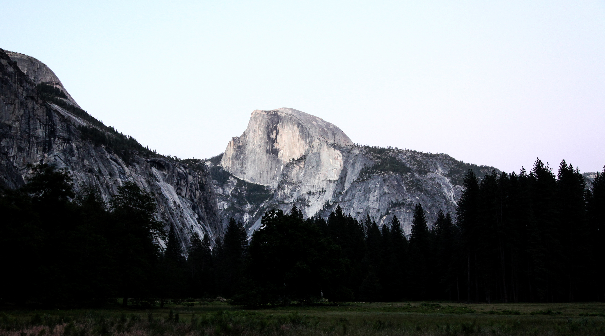

Yosemite National Park
explore & discover

Start off with booking your stay at at Half Dome Village.
Located beneath Glacier Point, Half Dome Village
features,
hotel rooms, wood cabins, and canvas tents for an overnight stay.
Half Dome Features:
- 46 Yosemite Cabins with private bath
- 14 Cabins with shared baths
- 403 Cabin tents
- 18 Standard motel rooms
Difficulty: Easy
Time: 30 Minutes
Elevation Gain:
Approximately 50 ft
Take a 1-mile walk to Lower Yosemite Falls. One of the easiest
trails
to hike and you will be rewarded with a spectacular
view of the Lower
Yosemite Falls. Best times to visit are
during the spring time.

Difficulty: Moderate
Time: 5-7 Hours - Full loop
2.5-3.5 Hours - Half Loop
Elevation Gain:Mostly Leveled
Through Valley Loop Trail you will hike through meadows, forests, along the Merced River.
Along this trail you will experience
views of Sentinel Rock, Cathedral Rock, Bridalveil Fall, El Capitan, Three Brothers, and
Yosemite Falls.
Difficulty: Easy
Time: 30-45 Minutes
Elevation Gain:Mostly Leveled
Big Trees Loop Trail is a winding trail through a forest with
many giant sequoias,
this trail features wheelchair accessible
pathways and showcases
the Fallen Monarch.

Difficulty: Easy
Time: 30 Minutes
Elevation Gain: Flat
Cook's Meadow Loop features a short walk with immaculate views
of Yosemite Falls, Half Dome, Glacier Point, and Sentinel Rock.
In Half Dome Village, you will wake up from your tent,
cabin,
or hotel/motel room, you will
wake up to the big and beautiful
view of Half Dome.
Half Dome is 8,800 feet of beautiful granite and
world-known destination for hikers across the world.
Staying in Half Dome Village you get to experience waking up
to the beautiful Half Dome.
Merced River is known for hiking, swimming, fishing,
rafting,
boating,and camping. Not only is it known to be a popular
Upper and Lower Yosemite Falls is a popular tourist destination
from travellers all over the world. Best time to visit the upper
and lower Yosemite Falls is from November through July, with some
peak flow in May.
Upper Yosemite Falls:
About 1,430 feet tall, you are able to view this beauty from multiple
locations such as, Yosemite Village,
Yosemite Valley Lodge,
the Merced River.
Lower Yosemite Falls:
Around 320 feet tall, you are about to view this from same locations as
Upper Yosemite Falls areas.

Bridalveil Falls is another popular waterfall tourists love to visit.
This waterfall is one of the first falls that tourist will see when entering
Yosemite Valley. This fall is over 620 feet tall and is easily spotted from Wawona Road (Route 41).
Yosemite has a variety of dining areas to enjoy and eat at,
such as:
- The Majestic Yosemite Dining Room: $$$$ - American
- Big Trees Lodge Dining Room: $$$ - American - Vegetarian
- Half Dome Village Pizza Deck: $$ - American - Pizza
These are the top three restaurants and dining halls that tourists
love to visit. They are very affordable and delicious as well.

Sold and mesmerized by the amazing views Yosemite National Park offers?
Book your trip today! Yosemite's popular Half Dome Village
is amongst the top spots tourists love to stay at.
Book your stay by clicking here.